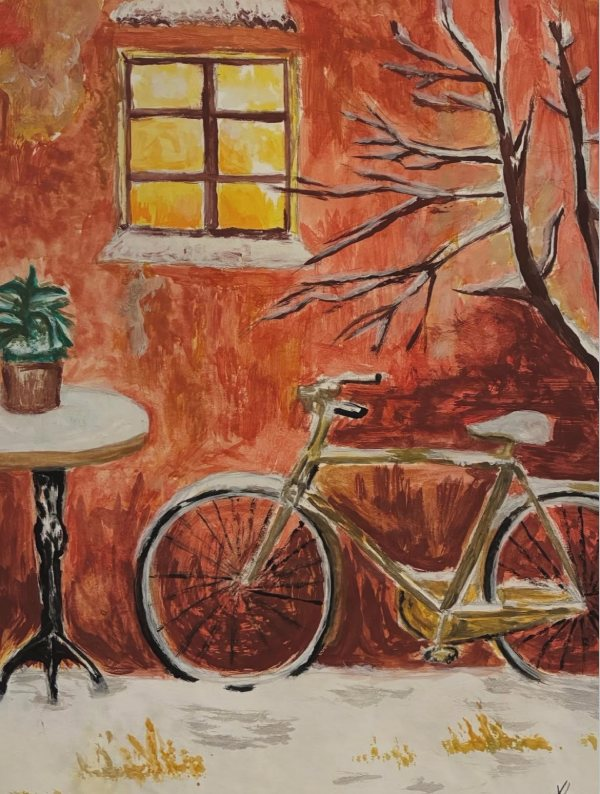
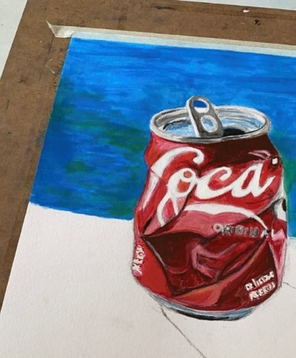
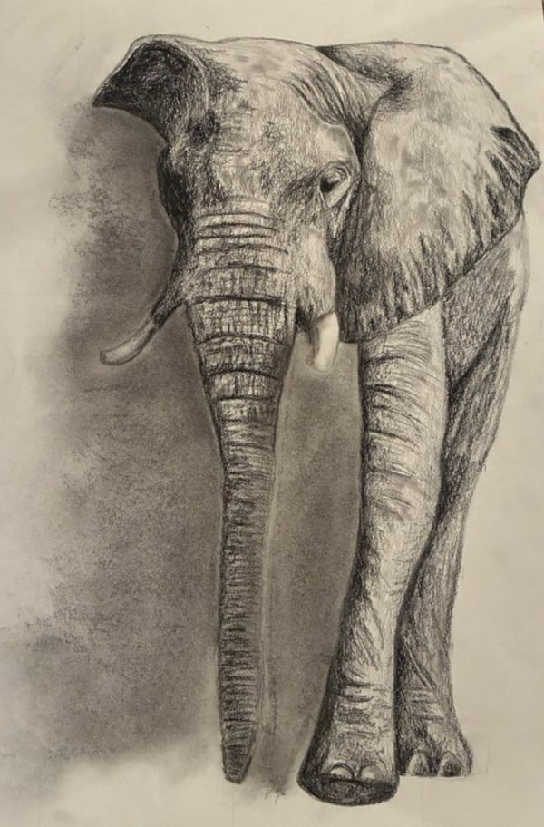
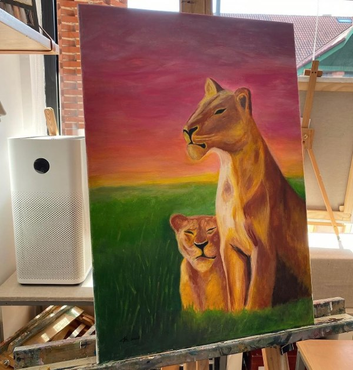
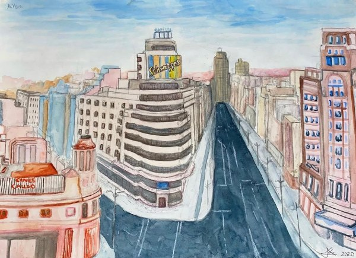
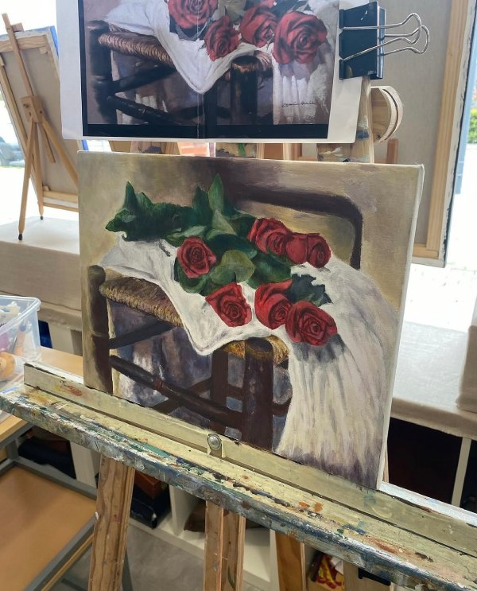
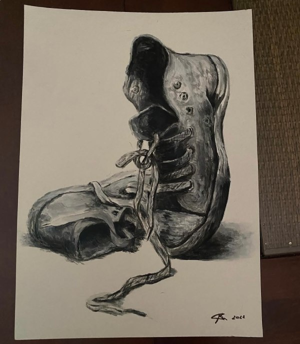

Art is much more than just a visual expression; it is a universal language capable of moving the soul and transforming our perception of the world. I am fascinated by losing myself in the contemplation of every brushstroke, texture, and color nuance, finding an inexhaustible refuge of inspiration in galleries and the creations of various artists. Each piece is a window into unique universes and a constant invitation to reflect on the beauty and depth of the human experience.
The power of art
My creations






